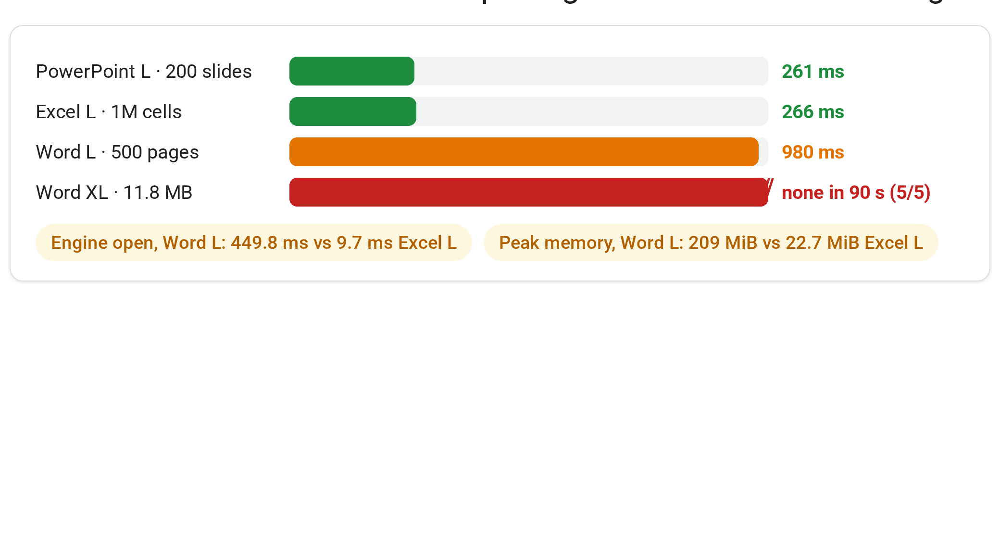
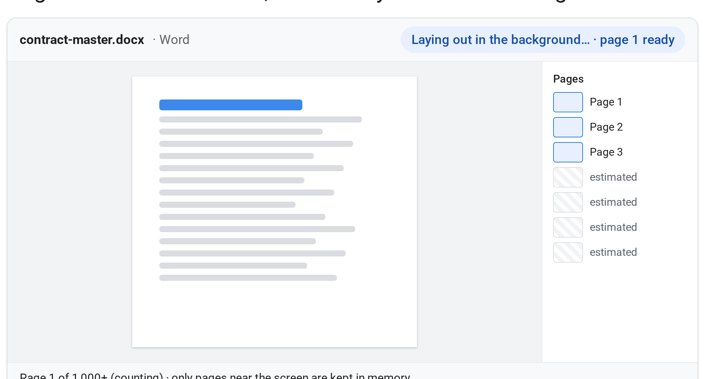
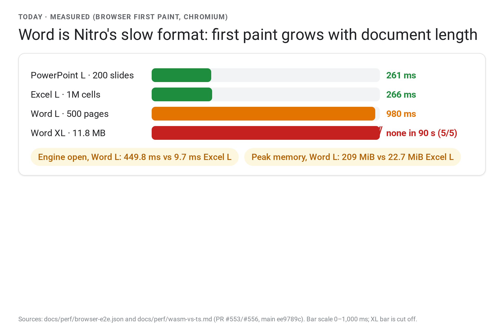
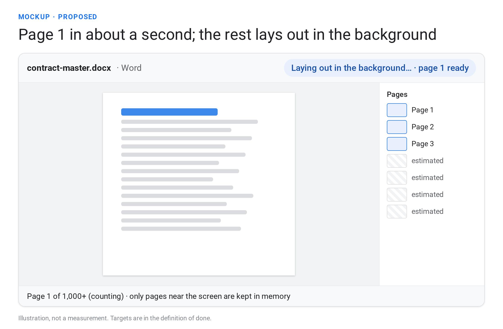

Open long Word documents in about a second: page 1 first, the rest laid out in the background, only visible pages kept in memory
Approved 2026-11-24 (👍). Strategic multi-milestone bet; queued for the nightly build behind host-API priority work. Build lands as phased draft PRs (milestone 1 first).
Approve: tap 👍 on the issue · Decline: tap 👎
Close-up of the change




Full screen


Today (measured): a 200-slide deck and a 1M-cell workbook paint in about 260 ms, a 500-page Word document takes 980 ms, and the 11.8 MB XL document did not paint within 90 s in 5 of 5 runs.


Mockup: page 1 shows right away; the page rail fills in as layout continues in the background; the status bar says the page count is still counting; only pages near the screen stay in memory.
Tap an image to open it full size.
Why
Contracts, reports and manuals often run to hundreds of pages, and Word is Nitro's slowest format. A 500-page document takes 980 ms to first paint, against 266 ms for a 1M-cell workbook. The 11.8 MB XL document never painted within 90 seconds. The engine numbers point to work that grows with document length before page 1 appears: 449.8 ms to open the 500-page file, against 9.7 ms for the large workbook. Word and PDF viewers show the first page and keep laying out the rest. This bet does the same, then keeps memory flat and makes editing a long document cheap.
Who it wins
Users first: anyone opening a long contract, thesis or report. Then embedding developers whose apps preview Word attachments (document review, AI chat over files), where one large .docx must never freeze the tab. This closes Nitro's only large-file gap: Excel and PowerPoint already beat the TS engine by 100× or more at the large tiers.
Phased plan
Each milestone ships on its own.
- M1 · Profile + page 1 first (about 1 week)Profile pages_500.docx and xl_a.docx to find what blocks first paint. Lay out and paint the first screenful of pages before the rest. 'Page 1 of …' counts up as layout continues.
- M2 · Background layout off the main thread (1–2 weeks)Pagination continues in the worker in time-sliced batches, so scrolling and typing stay responsive. Scrolling to a page that isn't laid out yet jumps to an estimated position and settles once that page is ready.
- M3 · Page virtualization (about 1 week)Only pages near the viewport keep their DOM or canvas. The rest are light placeholders at the right height, so memory stays flat past 1,000 pages.
- M4 · Incremental re-layout on edit (1–2 weeks)Typing re-lays out from the edited paragraph only until page breaks settle, so editing page 300 never touches pages 1–299.
Evidence
- docx XL (xl_a.docx, 11,773,330 B): the browser render did not complete within 90 s in 5 of 5 runs.Source: docs/perf/browser-e2e.json and docs/perf/wasm-vs-ts.md (PR #556)
- Browser first paint (median): docx L (pages_500.docx) 980 ms; xlsx L (cells_1m.xlsx) 266 ms; pptx L (slides_200.pptx) 261 ms.Source: docs/perf/browser-e2e.json (PR #556)
- Engine cold open, L tier: docx 449.75 ms, xlsx 9.73 ms, pptx 6.69 ms. Against the TS engine, docx L improves only 2.5× (ratio 0.401); xlsx L and pptx L improve about 160–200× (ratios 0.006 and 0.005).Source: docs/perf/wasm-vs-ts.md (PR #553)
- Peak memory: docx L 209.0 MiB vs xlsx L 22.7 MiB.Source: docs/perf/wasm-vs-ts.md (PR #556)
- Large docx is already causing problems: #550 (the TS oracle can't open docx XL) and a docx_load memory-cut branch (Part of #30). Issue #23 (Print Layout painter) is still open.Source: issues #550, #30, #23
- How others do it: desktop Word paginates in the background (the page count grows as it works), and PDF viewers show page 1 before the rest of the document has loaded.Source: observed competitor behaviour
Definition of done
- browser-e2e: docx XL (xl_a.docx) paints page 1 in 1 s median or less (today: nothing within 90 s), and docx L in 400 ms or less, published in docs/perf.
- Once background layout finishes, page count and per-page pixels match today's full layout on every docx fixture.
- Scrolling a 1,000-page document keeps the heap within a fixed budget (memory CI), and the status bar shows 'Page X of Y', updating as layout continues.
- Typing on page 300 re-lays out only from that paragraph forward, and the docx edit perf gate stays green.
- Eager loader under 17,408 B brotli. All required checks green.
Approve: tap 👍 on the issue · Decline: tap 👎